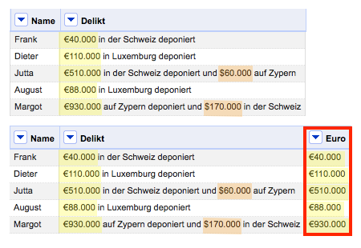
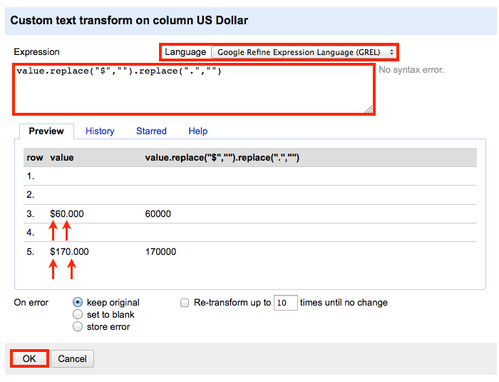
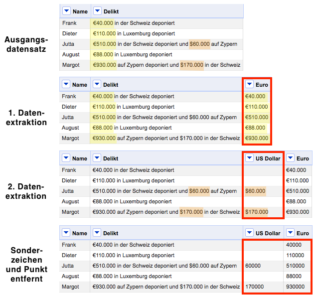

Published: 6. August, 2013 CONTENT NUTZUNG: CC BY-NC-SA 3.0
Wo muss man viel Zeit, Geduld und Einfallsreichtum investieren? Jep, in die Datenbereinigung. Die meisten Datensätze bleiben in der Regel Rohdiamanten, obwohl mehr rauszuholen wäre. Das nachfolgende Tutorial dient als Motivationsgrundlage.
Das Problem: Wie lassen sich die Geldbeträge aus der Spalte “Delikt” in separate Spalten überführen? In OpenRefine lässt sich das wie folgt realisieren:

Die einzelnen Schritte: Ich werde zunächst eine neue Spalte anlegen. Dazu wähle ich aus dem Dropdown Menü der Spalte “Delikt” die Option Edit column und den Befehl Add column based on this column aus.

Eine neue Eingabemaske öffnet sich. Dort definieren wir zuerst den neuen Spaltennamen “Euro”. Anschließend wähle ich “Clojure” als Syntax Sprache aus. Danach geben wir folgende Syntax ein:

Was macht die Syntax? Der Code sucht in der Spalte “Delikt” nach Elementen, die das Sonderzeichen “€” tragen. Wenn ein passendes Element gefunden wird, kopiert OpenRefine dieses in die neue Spalte “Euro”.

Das Ergebnis nach der ersten Transformation kann sich durchaus sehen lassen. Alle Elemente wurden erfolgreich identifiziert und isoliert.

Der erste Schritt hat lediglich die Eurobeträge extrahiert. Nun sollen auch die Dollarbeträge isoliert werden. Dazu wiederholen wir die Schritte mit zwei kleinen Änderungen.

Die erste Änderung betrifft den Spaltennamen. Die neue Spalte heißt nun “US Dollar”. Die zweite Änderung bezieht sich auf die Syntax. Wir tauschen das “€” Zeichen durch “$” aus.

Nach der zweiten Datenextraktion hat der Datensatz an Wert gewonnen. Wir konnten Informationen, die vorher nur schwer zugänglich waren, gezielt isolieren und für weitere Analysen nutzbar machen.

Der zweite Schritt soll nun die störenden Sonderzeichen “$“, “€“, “.” entfernen. Dazu wähle ich aus dem Dropdown Menü der Spalte “US Dollar” die Option Edit cells und den Befehl Transform aus.

Was macht die syntax? Der Code durchsucht die Spalte “US Dollar” nach folgenden Elementen “$“, “.” und löscht diese. Die Funktion dürfte den meisten von uns unter den Namen “Suchen und Ersetzen” bekannt sein. In der Voransicht kann man das Ergebnis der Transformation betrachten. Die letzten Schritte wendet man auch auf die Spalte “Euro” an, um die Datenbereinigung vollständig abzuschließen.

Zwei Transformationsschritte waren notwendig, um den Datensatz aufzuwerten. Mit den zwei Schritten konnten wir Daten nutzbar machen, die vorher nur schwer zugänglich waren.
